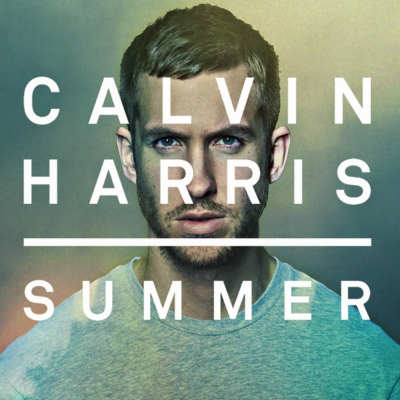

Nikki's Website
Top Albums
- Ready for the Weekend
- I Created Disco
- 18 Months
- Motion
Calvin Harris
Adam Richard Wiles (born 17 January 1984), known professionally as Calvin Harris, is a Scottish record producer, singer, songwriter and DJ. His debut studio album I Created Disco was released in June 2007, and was the precursor to his UK top 10 singles "Acceptable in the 80s" and "The Girls". In 2009, Harris released his second studio album Ready for the Weekend, which debuted at number one on the UK Albums Chart and was later certified gold by the British Phonographic Industry within two months of its release. Its lead single "I'm Not Alone" became his first number one single on the UK Singles Chart.
Harris rose to international prominence with the release of his third studio album 18 Months in October 2012. Topping the UK charts, the album became his first to chart on the US Billboard 200 chart (where it reached number 19). All eight of the album's singles, which were "Bounce", "Feel So Close", "Let's Go", "We'll Be Coming Back", "Sweet Nothing", "Drinking from the Bottle", "I Need Your Love" and "Thinking About You" reached the top 10 in the UK. Harris released his fourth studio album Motion in November 2014. It debuted at number two in the UK and at number five in the US, and became Harris's second consecutive number one album on the US Dance/Electronic Albums chart. The album's first three singles "Under Control", "Summer" and "Blame" all topped the UK chart.